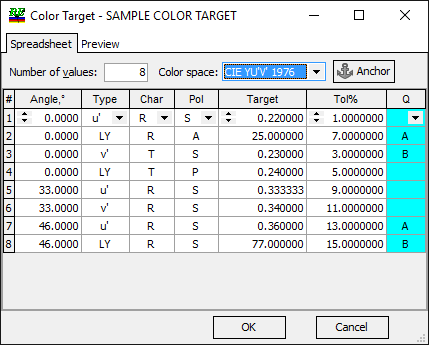

Setting Up the Color Target
Color Target specifies the color coordinates of the reflected or transmitted light.
In OptiChar, Color Target files are mainly useful for comparing Model or Measurement colors with Color Targets specified in OptiLayer.
Note: To exclude Color Targets from discrepancy computations, Color Targets are loaded into memory by default with a Weight of 0.0. If necessary, you can adjust this value in the General Information window.
The window opened at the Spreadsheet tab consists of two parts: the upper part is used to set the total number of color targets, while the lower part provides a spreadsheet format for entering and displaying color target data.
The Color Space drop-down list allows you to specify a Color Target using the appropriate conventions.

Up to 99 color targets can be used by the program. When the number of color targets is specified in the upper part of the window, the spreadsheet in the lower part of the window will have the corresponding number of rows. Generally speaking, one row corresponds to one target. Rows with identical data are also allowed. Each row of the spreadsheet contains the following data:
Angle: is the angle of incidence;
Type: Types of characteristics corresponding to the selected Color Space. If another Color Space is selected, the available characteristics in this column will be updated correspondingly.
Char: Spectral characteristic: R (Reflectance), BR (Back Reflectance), or T (Transmittance).
Pol: Polarization type: S, P, or A (Averaged).
Target: Value of X, Y, or Z coordinate, or other coordinates according to the Type setting.
Tol %: Tolerance (in percent) used to properly normalize a merit function.
Q: Qualifier may have values A, B, and blank (empty field for a standard target). It is also possible to use the R qualifier for the so-called Range Color Target specified as convex polygons. Range Color Targets are available for Chromaticity, CIE YU’V’ 1976, CIE YU’V’ 1960, Hunter Lab, CIE L*a*b*, CIE L*u*v* color spaces only.
Note: A light source and detector with uniform spectral power
distribution are used for color-related calculations if no
specific light source or
detector is explicitly
specified.
The Preview tab can be used for a quick check of the entered targets.

Crosses at the Preview window display targets entered at the Spreadsheet tab.